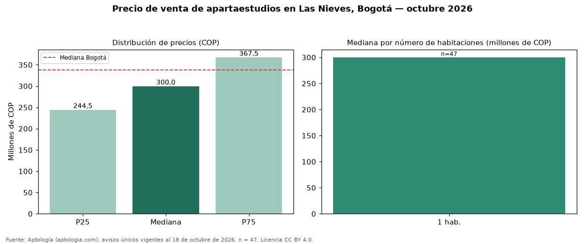

Precio de venta de apartaestudios en Las Nieves, Bogotá — octubre 2026
COP 300 millones es el precio mediano de apartaestudios en venta en Las Nieves, Bogotá (n = 47 avisos únicos). Frente al total de Bogotá (COP 338 millones), el barrio está 11 % por debajo. Cruzando con la oferta de arriendo del mismo barrio, la rentabilidad bruta implícita es de 7,6 % anual (canon por m² × 12 / precio por m²). El segmento con más oferta es el de 1 habitación (47 avisos, mediana COP 300 millones). El estrato más frecuente en los avisos es 3. La dispersión es moderada: el cuartil superior (COP 368 millones) es 1,5 veces el inferior (COP 244 millones). Por metro cuadrado, la mediana es COP 10 millones/m² (+0 % frente a COP 10 millones/m² en Bogotá), puesto 8 de 14 barrios con muestra suficiente. Datos abiertos CC BY 4.0 de Aptología; fuente y búsqueda de inmuebles: https://www.aptologia.com/apartaestudios-en-venta/bogota/las-nieves. Archivos: PDF de 2 páginas, CSV con las cifras y gráfica PNG.

| Avisos únicos | 47 |
|---|---|
| Percentil 25 | COP 244.500.000 |
| Mediana | COP 300.000.000 |
| Percentil 75 | COP 367.500.000 |
| Mediana por m² | COP 10.000.000 |
Fuente: avisos vigentes de portales inmobiliarios recopilados por Aptología, deduplicados (mínimo 30 avisos únicos por celda). Precios pedidos, no cerrados. Fecha: 2026-10-18.